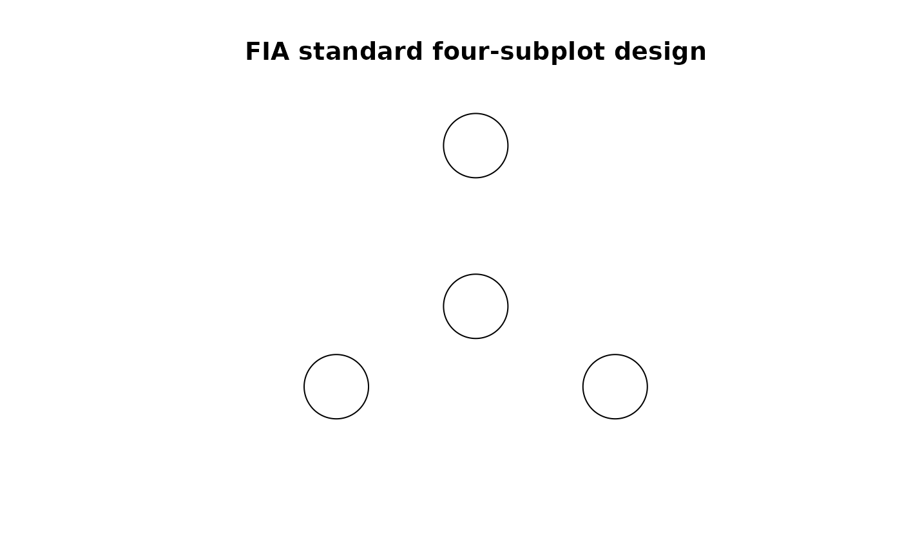

Create a 'spatstat' observation window for the FIA plot footprint
create_fia_owin.Rdcreate_fia_owin() returns an object of class "owin" from the
spatstat library, representing the observation window of an FIA plot
in the 2-D plane. The returned object is used when creating a spatstat
point pattern for an FIA plot tree list.
Arguments
- linear_unit
An optional character string specifying the linear distance unit. Defaults to the native FIA unit of
"ft"``, but may be set to"m"` instead.- macroplot
An optional logical value. The default is
FALSE, which defines the FIA plot footprint in terms of the standard four-subplot configuration with subplot radius of 24 ft (7.3152 m). May be set toTRUEin which case the observation window will be defined using the FIA optional "macroplot" dimension instead (58.9 ft or 18.227 m radius, used only in certain areas of the Pacific Northwest FIA region).- npoly
Integer value giving the number of edges to use for polygon approximation. Defaults to
720.
Value
An object of class "owin" which defines the observation window for a point
pattern in the spatstat library.
Examples
w <- create_fia_owin()
summary(w)
#> Window: polygonal boundary
#> 4 separate polygons (no holes)
#> vertices area relative.area
#> polygon 1 360 1809.62 0.25
#> polygon 2 360 1809.62 0.25
#> polygon 3 360 1809.62 0.25
#> polygon 4 360 1809.62 0.25
#> enclosing rectangle: [-127.921, 127.921] x [-84.001, 144.001] feet
#> (255.8 x 228 feet)
#> Window area = 7238.47 square feet
#> Unit of length: 1 foot
#> Fraction of frame area: 0.124
w <- create_fia_owin("m")
summary(w)
#> Window: polygonal boundary
#> 4 separate polygons (no holes)
#> vertices area relative.area
#> polygon 1 360 168.119 0.25
#> polygon 2 360 168.119 0.25
#> polygon 3 360 168.119 0.25
#> polygon 4 360 168.119 0.25
#> enclosing rectangle: [-38.99032, 38.99032] x [-25.6035, 43.8915] meters
#> (77.98 x 69.5 meters)
#> Window area = 672.475 square meters
#> Unit of length: 1 meter
#> Fraction of frame area: 0.124
plot(w, main = "FIA standard four-subplot design")
